Research paperPHANTASM: A pipeline for historic analysis, network transformation, and spatial matching
Author links open overlay panel,
Archived publisher HTML; online 24 November 2026. Canonical DOI. © 2026 The Authors, CC BY 4.0. The equation DOM is preserved; exact publisher typography needs its original MathJax styles.


Table 1. Mathematical notation and pipeline parameters.
| Symbol | Description | Value |
|---|---|---|
| Stage 1: Segmentation & processing | ||
| Input image dimensions | – | |
| Training patch dimensions | ||
| Sampled training tiles per epoch | 2000 | |
| Validation patch count | 400 | |
| Training epochs | 100 | |
| Morphological operations kernel size | 5 × 5 | |
| Neighbour summation kernel for node detection | 3 × 3 | |
| High hysteresis threshold | 0.6 | |
| Low hysteresis threshold | 0.2 | |
| Stage 2: Graph construction | ||
| Node merging distance threshold | 5 m | |
| Minimum component size for retention | 10 nodes | |
| Stage 3: Text & name propagation | ||
| Text-to-road search radius | 100 px | |
| Maximum deviation angle for name flow | 40° | |
| Confidence decay rate per segment | 1.5% | |
| Confidence multiplier to trigger name replacement | 1.3 | |
| Road-contact multiplier for text assignment | 40 | |
| Gaussian bandwidth for name assignment | 100 | |
| Anchor-match score required to accept an intersection anchor | 0.7 | |
| Fuzzy-match score against the street-name dictionary (0–100) | 75 | |
| Fuzzy score above which an intersection is marked verified (0–100) | 80 | |
| Stage 4: Geolocation (RANSAC & TPS) | ||
| RANSAC inlier threshold, applied to anchor clouds min–max normalised to | 0.01 | |
| TPS smoothing parameter | Dynamic | |
| RANSAC iterations | 5000 | |
| Manually placed control points, semi-automatic mode | 2–61 | |
| Stage 5: Similarity & Matching | ||
| Distances & Lengths | ||
| Euclidean distance between path endpoints | – | |
| Directed Hausdorff distance | – | |
| Length of historic link | – | |
| Network length of candidate path | – | |
| Radii | ||
| Pass 2 radius multiplier applied to | 2.5 | |
| Pass 2 candidate search radius (default; | 350 m | |
| Pass 1 candidate search radius (default; tuned) | 150 m | |
| Angles | ||
| Internal angle of candidate geometry | – | |
| Thresholds | ||
| Pass 0 RANSAC residual threshold | 0.01° | |
| Buffer tolerance for evaluation metrics | 5 m | |
| Dog-leg angle penalty threshold | 45° | |
| Dissimilarity below which a match is tier High (default; tuned) | 0.25 | |
| Upper bound of tier Medium; results use High | 0.60 | |
| Upper bound of tier Low ( | 0.75 | |
| Upper bound of tier Very low; above this a match is rejected | 0.90 | |
| Sinuosity penalty threshold | 1.10 | |
| Normalisation | ||
| Warp score displacement normalisation factor | 80 | |
| Minimum allowable path-to-link length ratio | Optimised | |
| Maximum allowable path-to-link length ratio | Optimised | |
| Weights | ||
| Reverse Hausdorff weighting factor | 0.2 | |
| Bearing fraction above which a hard penalty applies (90°) | 0.5 | |
| Hard bearing penalty, | – | |
| Length-ratio penalty outside the gate; | – | |
| OSM intersection consolidation tolerance before matching | 25 m | |
| Bearing weight | Optimised | |
| Warp direction weight | Optimised | |
| Warp magnitude weight | Optimised | |
| Shape weight | Optimised | |
| Sinuosity weight | Optimised | |
| Topology weight | Optimised | |
| Warp weight | Optimised | |
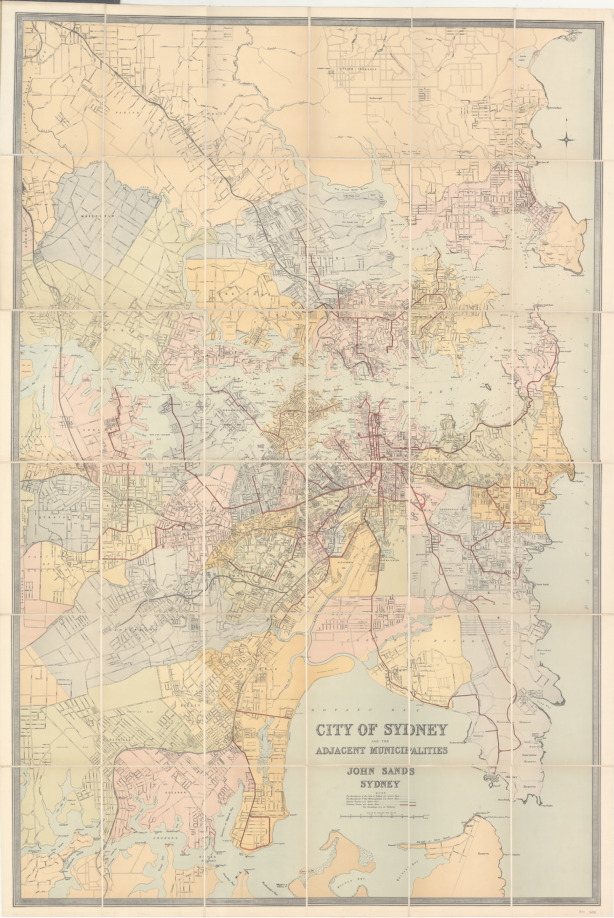
Fig. 1. John Sands map of Sydney from 1903, used as the main city-scale test map for end-to-end pipeline evaluation.
City of Sydney Archives (John Sands (Firm), 1903).Table 2. Role of each map by pipeline stage. “Held-out” means the map contributed no training data to that stage. Held-out maps with ground truth for Stages 1–2 are reported as test maps in Table 4, Table 6.
| Map | Series | Stage 1 | Stage 2 | Stage 3 | Stages 4–5 |
|---|---|---|---|---|---|
| Sydney 1877 | John Sands | Train | Train | Train | Train |
| Sydney 1903 | John Sands | Held-out | Held-out | Eval | Eval |
| Strathfield | Atlas | Train | Train | Text train | Eval |
| Enfield | Atlas | Held-out | Held-out | Text train | Eval |
| St Peters | Atlas | Train | Train | Text train | Eval |
| Annandale | Atlas | Held-out | Held-out | Eval | Eval |
| Macdonaldtown | Atlas | Held-out | Held-out | Eval | Eval |
| Waterloo | Atlas | Train | Train | Eval | Eval |
| Alexandria | Atlas | Held-out | Held-out | – | Eval |
| Camperdown | Atlas | Train | Train | – | Eval |
| Drummoyne | Atlas | Held-out | Held-out | – | Eval |
| Paddington | Atlas | Held-out | Held-out | – | Eval |
| Redfern | Atlas | Held-out | Held-out | – | Eval |
| The Glebe | Atlas | Held-out | Held-out | – | Eval |
| Melbourne 1942 | Melbourne | Held-out | Held-out | – | Eval |
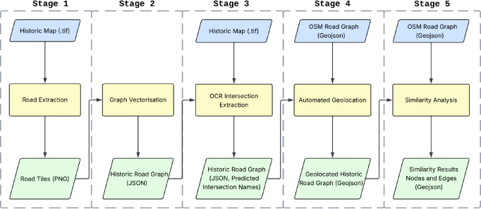
Fig. 2. Overview of the five-stage PHANTASM workflow, from raster historic map input to georeferenced network matching against OSM.
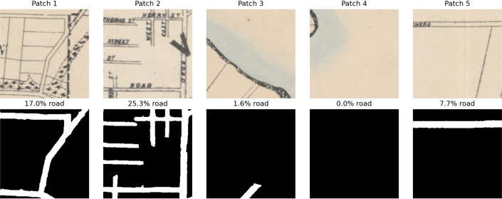
Fig. 3. Examples of randomly sampled training patches from the 1877 map, with the proportion of road pixels in each patch shown to illustrate class-balanced sampling.
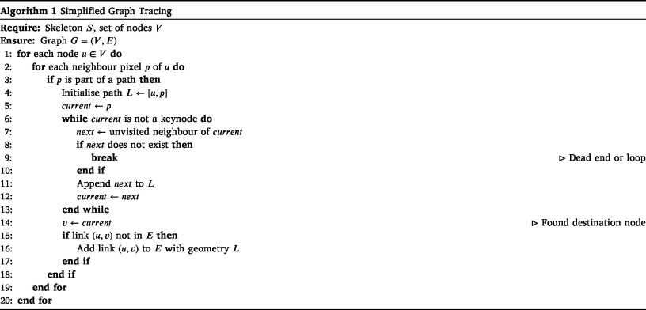
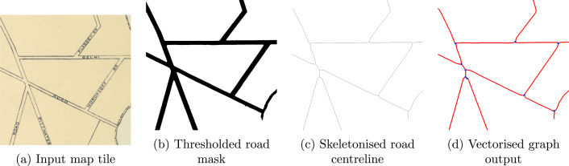
Fig. 4. Example of the Stage 2 post-processing sequence for a tile from the 1903 Sydney map, showing the transition from raster input to binary mask, skeleton, and final vector graph.
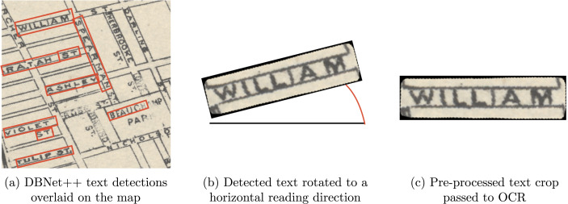
Fig. 5. Example of the OCR preparation workflow, from DBNet++ detections on the map to rotated and cropped text images for recognition.
Table 3. Hyperparameter search space. All weights are normalised such that
| Category | Parameter | Distribution | Range/Logic |
|---|---|---|---|
| Similarity weights | Log-Uniform | ||
| Log-Uniform | |||
| Log-Uniform | |||
| Log-Uniform | |||
| Log-Uniform | |||
| Search gates | Initial search radius ( | Integer Uniform | |
| Relaxation radius | Derived | ||
| Length ratio (Min/Max) | Float Uniform | Min: | |
| Thresholds | Confidence high ( | Float Uniform | |
| Confidence medium ( | Float Uniform | ||
| Search depth | Integer | Max candidates: |
Table 4. U-Net performance comparison across maps.
| Map | Accuracy | Precision | Recall | Dice | IoU |
|---|---|---|---|---|---|
| 1877 Map (Training) | 0.983 | 0.876 | 0.909 | 0.892 | 0.805 |
| 1903 Map (Testing) | 0.943 | 0.766 | 0.971 | 0.856 | 0.749 |
| Enfield 1886 (Testing) | 0.941 | 0.954 | 0.565 | 0.710 | 0.550 |
| Annandale 1886 (Testing) | 0.813 | 0.967 | 0.534 | 0.688 | 0.524 |
| Macdonaldtown 1886 (Testing) | 0.900 | 0.740 | 0.506 | 0.601 | 0.430 |
| Waterloo 1886 (Training) | 0.926 | 0.960 | 0.425 | 0.589 | 0.418 |
| Melbourne 1942 (Testing) | 0.965 | 0.832 | 0.849 | 0.840 | 0.725 |
Table 5. Width sensitivity of pixel recall. The predicted graph is rasterised at increasing stroke widths against the annotated mask; the geometry is identical in every row and only the rendering width changes.
| Stroke width | Annandale | Waterloo | Macdonaldtown | |||
|---|---|---|---|---|---|---|
| Empty Cell | Recall | Prec. | Recall | Prec. | Recall | Prec. |
| 1 px | 0.042 | 0.964 | 0.064 | 0.962 | 0.049 | 0.947 |
| 5 px | 0.300 | 0.951 | 0.439 | 0.943 | 0.357 | 0.941 |
| 9 px | 0.457 | 0.920 | 0.661 | 0.896 | 0.560 | 0.923 |
| 11 px | 0.520 | 0.902 | 0.742 | 0.867 | 0.636 | 0.908 |
| 15 px | 0.641 | 0.854 | 0.875 | 0.789 | 0.778 | 0.849 |
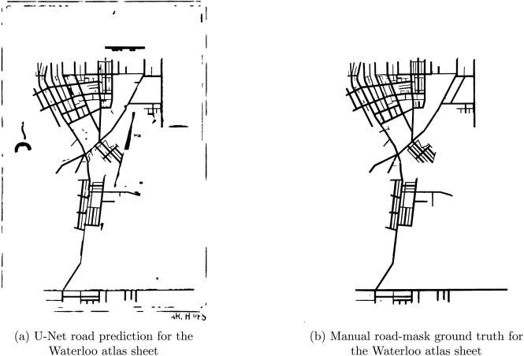
Fig. 6. Comparison between the Waterloo atlas-sheet road prediction and the manually annotated pixel-level ground truth.
State Library of NSW atlas sheet.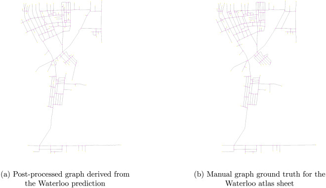
Fig. 7. Waterloo atlas sheet after post-processing: the graph derived from the prediction against the manual graph ground truth.
State Library of NSW atlas sheet.Table 6. Graph construction performance across maps.
| Map | Precision | Recall | F1 |
|---|---|---|---|
| 1877 Map (Training) | 0.677 | 0.909 | 0.776 |
| Enfield 1886 (Testing) | 0.868 | 0.891 | 0.879 |
| Annandale 1886 (Testing) | 0.877 | 0.844 | 0.860 |
| Macdonaldtown 1886 (Testing) | 0.850 | 0.917 | 0.882 |
| Waterloo 1886 (Training) | 0.931 | 0.893 | 0.912 |
| Melbourne 1942 (Testing) | 0.831 | 0.827 | 0.829 |
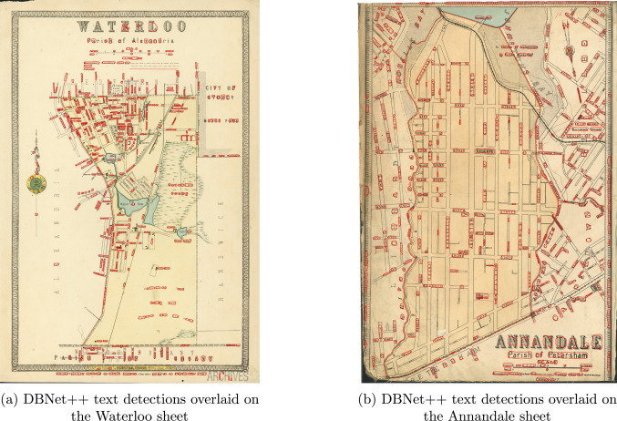
Fig. 8. Examples of DBNet++ text-detection polygons overlaid on two atlas sheets, showing the localisation of candidate street labels.
State Library of NSW atlas sheets.Table 7. OCR and name propagation performance across maps.
| Map | Seed links (%) | Named nodes (%) | Named links (%) | Unique names | Median confidence |
|---|---|---|---|---|---|
| 1903 Sydney (Testing) | 7021 (27.7%) | 15,950 (94.5%) | 22,108 (87.5%) | 2105 | 0.79 |
| Annandale 1886 (Testing) | 64 (18.0%) | 253 (94.4%) | 331 (93.0%) | 16 | 0.68 |
| Macdonaldtown 1886 (Testing) | 82 (29.0%) | 216 (96.9%) | 266 (94.0%) | 14 | 0.74 |
| Waterloo 1886 (Testing) | 71 (23.5%) | 231 (99.6%) | 300 (99.3%) | 88 | 0.73 |
Table 8. TrOCR recognition accuracy on 192 held-out labelled crops.
| Empty Cell | CER | WER | Exact match |
|---|---|---|---|
| Case-sensitive | 0.431 | 0.608 | 0.391 |
| Case-insensitive | 0.226 | 0.438 | 0.562 |
Table 9. Anchor attrition on the 1903 sheet. Counts are from a re-run of Stages 3–4, which gives 20,661 text detections and 18 RANSAC inliers; the original run reported 27,856 detections and 33 inliers.
| Stage | Retained | Dominant loss |
|---|---|---|
| Text detections | 20,661 | – |
| OCR attempted | 20,661 | – |
| Non-empty recognised strings | 20,661 | |
| Matched to the OSM dictionary | 9,937 | 10,724 lost (51.9%) |
| Verified outright | 742 | |
| Corrected to a dictionary entry | 7,844 | |
| Matched on suffix only | 1,351 | |
| Named links after propagation | 9,976 | of 11,826 edges (84.4%); median confidence 0.795 |
| RANSAC inliers | 18 | Geometric inconsistency; 13–20 across draws |
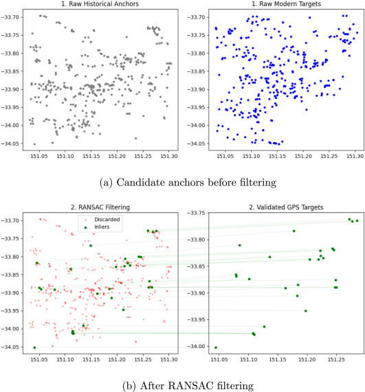
Fig. 9. Anchor points before and after RANSAC filtering in the original automated run. (a) Candidate anchors from validated intersection names. (b) Green points are retained inliers used for the transformation, red points rejected outliers.
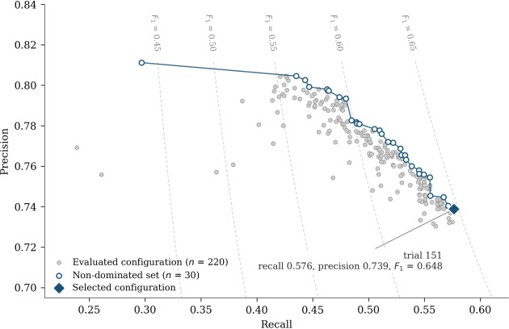
Fig. 10. Pareto frontier for the NSGA-II search, showing the trade-off between recall (horizontal) and precision (vertical). Non-dominated members are marked; dashed contours are lines of constant F1, so any two configurations can be compared directly. The selected operating point is the F1 maximum of the frontier, at recall 0.576 and precision 0.739.
Table 10. Selected operating point: the F1 maximum of the Pareto frontier in Fig. 10. Weights are the sampled values normalised to sum to one.
| Parameter | Value |
|---|---|
| 0.143 | |
| 0.687 | |
| 0.061 | |
| 0.092 | |
| 0.018 | |
| Initial search radius | 50 m |
| Length-ratio gate | |
| 0.214/0.528 |
Table 11. Stage 5 matching performance on all evaluated maps. All rows except the last come from a single run at the selected operating point with semi-automatic geolocation; the last row reports the 1903 sheet under fully automated geolocation with the original Stage 5 configuration.
| Map | Links | Accepted | Recall | Precision | F1 |
|---|---|---|---|---|---|
| St Peters | 256 | 245 | 0.607 | 0.897 | 0.724 |
| Enfield | 354 | 350 | 0.608 | 0.865 | 0.714 |
| Drummoyne | 192 | 186 | 0.575 | 0.832 | 0.680 |
| Strathfield 1889 | 265 | 263 | 0.565 | 0.821 | 0.669 |
| The Glebe | 595 | 591 | 0.539 | 0.835 | 0.655 |
| Paddington | 563 | 551 | 0.514 | 0.874 | 0.647 |
| Annandale | 442 | 436 | 0.541 | 0.790 | 0.642 |
| Macdonaldtown | 283 | 278 | 0.503 | 0.874 | 0.638 |
| Waterloo | 302 | 299 | 0.519 | 0.823 | 0.637 |
| Alexandria | 433 | 428 | 0.511 | 0.822 | 0.630 |
| Redfern | 489 | 484 | 0.443 | 0.854 | 0.584 |
| Camperdown | 356 | 348 | 0.434 | 0.842 | 0.573 |
| Melbourne 1942 | 6,240 | 3,271 | 0.114 | 0.329 | 0.170 |
| Sydney 1903 (semi-automatic) | 18,204 | 17,615 | 0.591 | 0.725 | 0.651 |
| Sydney 1903 (fully automated) | 21,103 | 20,304 | 0.662 | 0.674 | 0.668 |
Table 12. Every historic link classified by proximity to a modern road and by match outcome. A: within 30 m and matched. B: within 30 m and missed. C: outside 30 m but matched. D: outside 30 m and not matched. Conditional recall
| Map | A | B | C | D | Within 30 m | |
|---|---|---|---|---|---|---|
| Strathfield 1889 | 251 | 4 | 10 | 2 | 0.955 | 0.984 |
| Enfield | 328 | 7 | 20 | 0 | 0.944 | 0.979 |
| The Glebe | 545 | 13 | 37 | 0 | 0.938 | 0.977 |
| Waterloo | 274 | 5 | 21 | 2 | 0.924 | 0.982 |
| Macdonaldtown | 252 | 9 | 22 | 0 | 0.922 | 0.966 |
| Paddington | 494 | 21 | 45 | 3 | 0.915 | 0.959 |
| Camperdown | 309 | 13 | 34 | 0 | 0.904 | 0.960 |
| St Peters | 222 | 9 | 21 | 4 | 0.902 | 0.961 |
| Drummoyne | 167 | 6 | 18 | 1 | 0.901 | 0.965 |
| Redfern | 419 | 13 | 59 | 1 | 0.878 | 0.970 |
| Alexandria | 369 | 10 | 53 | 1 | 0.875 | 0.974 |
| Annandale | 373 | 17 | 54 | 3 | 0.872 | 0.956 |
| Sydney 1903 | 12,319 | 324 | 5045 | 535 | 0.694 | 0.974 |
| Melbourne 1942 | 2,841 | 54 | 389 | 2956 | 0.464 | 0.981 |
| All fourteen | 19,163 | 505 | 5828 | 3508 | 0.678 | 0.974 |
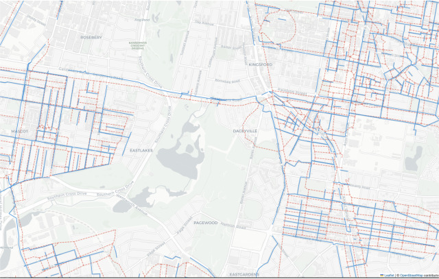
Fig. 11. Overlay of the transformed 1903 historic network (orange) and the matched OSM links (blue), illustrating areas of agreement and residual spatial mismatch.
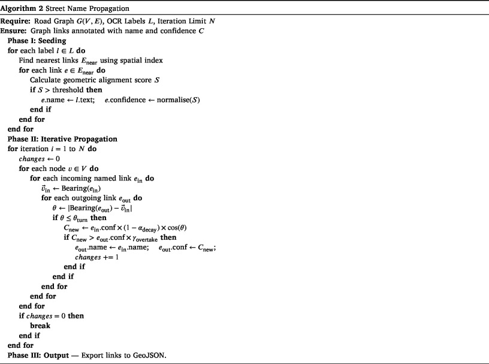